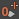

每个动画层的“权重”(Weight)确定在场景的结果动画中播放多少动画。
为动画层的“权重”(Weight)值设置关键帧可以融合层的输入和输出效果，以便设置在任何指定时间该层给场景中的结果动画带来多少影响的动画。
可以通过以下方法设置动画层的权重：使用权重关键帧设置按钮（ 和 ）或“动画层编辑器”(Animation Layer Editor)中的“权重”(Weight)控件，或者选择“层”节点并编辑“通道盒”(Channel Box)中的值。
为动画层的权重设置关键帧
您也可以使用 “动画层编辑器”(Animation Layer Editor)按钮快速将层“权重”(Weight)值及权重的关键帧设置为 1 或 0。
您可以使用“时间滑块”(Time Slider)、“曲线图编辑器”(Graph Editor)或“摄影表”(Dope Sheet)查看并编辑您在动画层的“权重”(Weight)值上设置的关键帧。请参见查看层权重动画。